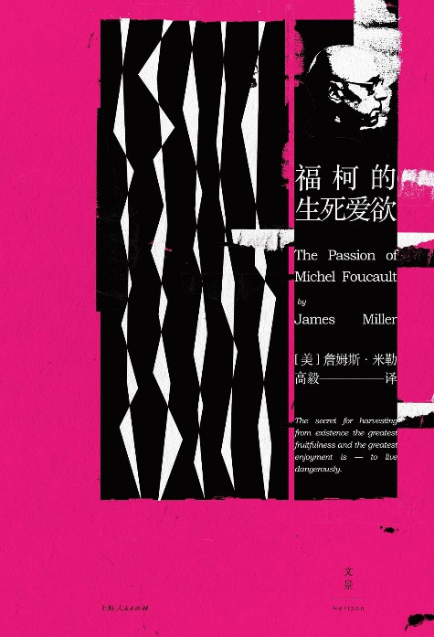
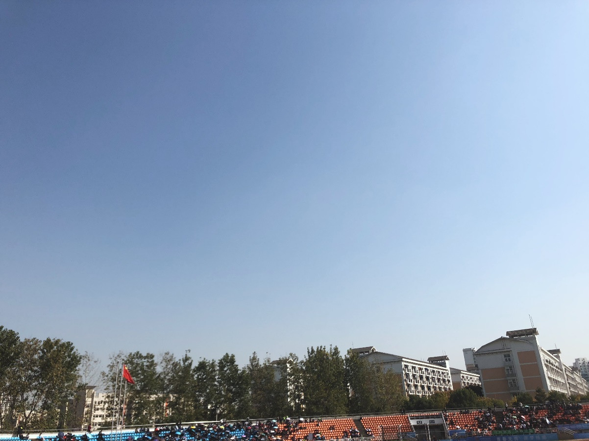

做 HIV 快检的这一个月
写在前面
本文由快检组志愿者豪杰（豆瓣 ID：镰仓的雪）最早发布于豆瓣日记，酷儿论坛发布推送前，对部分内容进行了删改。
本文所讲述的故事全部是真实的，但为保护当事人隐私，不排除笔者在书写过程中进行了一些文学性修饰的可能性。

前两天刚刚收到酷儿论坛的邮件，终于成为了一位“在册”的酷儿论坛的志愿者。然而我的故事并非从这里开始，事实上，接触酷儿论坛 HIV 快检志愿者工作已经一个月有余。当一个月前我在高教园区协调临时的志愿者贴海报，大力和郭子把试纸亲手交给我的时候，这个故事就已经开始。
我认为 HIV 快检志愿者的工作是一些举手之劳的事情——一方面来讲是这样的，我只不过是在同志社交软件的 Profile 上告诉访客我可以提供免费的 HIV 检测，让那些有需要的基友来找我取试纸；一方面来讲，并不是这样，这一个月接触到人和事远远超出我的想象，甚至是心理承受能力，这几十盒试纸的分量，其实远远要沉重过我的想象。
这一个月来，我遇到过开口便用很具侮辱性的词语骂我“毒逼”的人，也许他认为只有 HIV 携带者才可以做相关的公益项目；我遇到过颐指气使地要求我一次给好几盒试纸的人，他们通常的理由是要拿来无保护性交前测试（但我们真的非常非常不提倡这么做）；我遇到过诘问我“做 HIV 相关公益项目的人怎么可以约炮”的人，他也许认为志愿者必须是不食人间烟火的神仙吧……
上面的这些经历，在我接手高教园区的项目之前，其实便在我的预料之中，因此遇到也是一笑而过。真正让我心情低落到崩溃边缘的，是十月份的两位朋友。
18岁生日宿醉后的第二天，我的 Blued 收到了小A的信息，小A告诉我他想要两盒 HIV 试纸，我例行地告诉他一个人一次只能拿一盒试纸。小A回复我说他的朋友也想测试一下，我便答应了他的请求，留下了电话号码，让他来我学校生活区门口给我打电话。
日落时分，我接到了小A的电话。小A的长相是那种圈内公认的名媛型：经过训练的胸肌在合身的黑色 Polo 衫里显得非常 sexy，平坦的小腹连着好看的臀部，在壮硕的上半身的衬托下，下肢反而显得纤细起来，修理的整整齐齐的鬓角和淡淡香水味。男性气质和女性气质的平衡，符合了我对一个 Gay 圈名媛所有的遐想。
我把两盒 HIV 检测试纸和安全套递给了小A，小A便告诉我今晚要去约炮，他要拿这两盒试纸在约炮前用。
我便问他：“不戴套吗？”。
小A回答：“当然戴呀，保命要紧，我只是测个心安。”
分开前，小A说了一句让我哭笑不得的话：“太谢谢你了，您这是在做行善积德的好事呀！”生活在基督教信仰的原生家庭，我真的很少听到行善积德这个成语，同时被一个大我将近十岁的人用敬语，我真的有点无所适从。
我本以为再也不会见到小A，没想到两个多小时后，我接到了小A的电话。小A慌张的告诉我，他的性伴检测出了 HIV 阳性。他又告诉我他的车停在我们学校门口，让我去他的车上说。我当时也没多想，披上了风衣就走出了寝室。一辆黑色的宝马 SUV，正跳着双闪，停在学林街上。
上车后，小A告诉我，他自己的检测结果是阴性，他很害怕自己会被感染。
我便问小A：“你们进行了哪些接触或者是性行为呢？”
小A告诉我，他的性伴和他进行了舌吻、舐耳，同时他的性伴对他进行了口腔性交，两个人并没有进行肛门性交。
听完后我松了一口气，两个人没有高危行为，便安慰小A放宽心，这些行为传播 HIV 的概率极低，正常情况下基本可以忽略不计。
小A生性多疑，又向我抛出了一连串的问题，一会儿说换季了自己的嘴唇干到起皮，一会儿说自己的耳朵上的小伤口没有完全愈合，一会儿又说被 blowjob 也有可能被传染，过了不久又向我询问口腔粘膜渗出液检测的准确率，甚至还说性伴的精液射到了他的西裤上，病毒会不会渗透过布料进入他的身体。
这一连串的问题着实把我说愣住了，我知道答案，我却不知道怎么回答小A。
我便问小A，他的性伴是否进行了重新检测。
小A又向我展示了他的性伴发来的两盒试纸的图片，全是C字一条杠。
我便告诉他，既然他的血液检测显示阳性，那么就是没有问题的。
小A还是不放心，他怀疑他的性伴是恶意传播者，可能用了假的图片。
我回答：“就算他真的是 HIV 携带者，你们的性接触传染的风险真的很低啊。”
小A说：“我真的很害怕！我很年轻，我不想死。我是不是要去吃阻断药。”（事实上，考虑到副作用风险和经济成本，这个场景上并没有使用阻断药的必要。）
我没辙了，我便考虑带小A去相关机构，可能专业人士给出的专业意见可以让小A更加安心。我打电话给做HIV快检项目比我资深的大力，简单介绍了情况，大力的意见和我一样——并没有服用阻断药的必要。这是驾驶座上的小A拿走了我的电话，用他从开始到现在都没变过的慌张语气向大力传达他的害怕。
我和大力拿小A没辙了。大力给我发了一个公立医院和一个抗艾合作方 NGO 的地址，让我们自行选择要去的地方。小A说他是公务员，要是去医院的诊疗信息被体制内的人查到，他的职业生涯就毁了。（涉世未深的我到现在也不清楚体制内的审查制度究竟有没有如小A的恐怖。）于是，他开车带我去了某抗艾 NGO 的办公场地。
一路上他用一种极度紧张的姿态握着方向盘，一边告诉我自己对 HIV 的研究和看法（虽然这些观点很多是错误的），分享了体制内的男同性恋者的种种的不得已，又以一个过来人的身份给了我好多感情上的建议。我一边聆听，一边纠正，一边又不断安抚。
车子在城市快速路上飞驰，黄色的街灯给了我莫名其妙的极其无助的感觉。一路聊下来，车子很快停在了闹市区某个老旧小区的沿街泊位。
这家 NGO 给当地的男同性恋者长期提供免费的安全套、润滑剂、HIV 检测与咨询服务。平心而论，它们靠疾控中心的补贴是难以生存的，当然还要靠售卖 HIV 阻断药来支持工作。
我们找到了大力发来的地址，轻轻地推开了门，一个年轻的男人正在打拳皇：“这么晚了，过来干嘛啊？”
我们说明了情况，并告诉他大力给我们打过招呼。年轻人打了个电话，不久后，一个满脸笑容的中年男人开着电瓶车出现在了小区门口，笑脸盈盈地跟我们打了招呼。
中年人开始和小A嘘寒问暖。老人家娓娓道来的语气，也着实让人的不安消解了不少。小A又一次语无伦次地把对我和大力讲过的话又讲了一遍。中年人思考了片刻，告诉小A不用担心，应该不会感染，但是鉴于他的情况，最好还是吃一下阻断药。小A听了当场买了阻断药。
中年人随即给小A又做了一次检测，确认其为 HIV 抗体阴性后，告诉小A他这售买的两类阻断药。一类是国产的，售价 1,980；另一类是进口的，售价2,980。当然，小A要了 2,980 的阻断药，颤颤巍巍地接过了两瓶装满药片的塑料瓶。
随后，中年人开始一边给小A讲解阻断药的用法，一边又开始用夹杂着强烈吴语口音的普通话对他引以为豪的中心侃侃而谈。“我们做防艾公益已经很久了…”“我和 Blued 的那个被总理接见过的什么乐（耿乐，作者注）私底下都认识的。”“小伙子你看，央视的《焦点访谈》都采访过我呢！”
几句话之间，洋溢着中年人对他的事业的强烈自豪感。
10月的杭州的夜晚非常冷，急急忙忙的我出门只穿了一条短裤，和小A走出办公室，一阵寒风侵袭进我的裤管，几小时内见证了如此多的事情，一种莫名的无助感涌上心头。
我坐上副驾驶，时针即将指向12点，学校寝室的门禁时间也快到了。
小A说：“我给你开间房，今晚你住外面吧。你对酒店有什么要求？”
我：“没事，都可以，能让我睡一晚上就可以。”
小A问我：“希尔顿可以吗？”
我：“能住就行，不必如此破费。”
小A：“没事，我不差这点钱。今天真的辛苦你了！”
小A趁着等红灯的空挡，给我预定了酒店。
车子继续在高架桥上飞驰，小A和我说他很恐惧死亡。他在体制内工作，刚刚还完车贷，又刚刚在杭州买下房子，又告诉我身为男同性恋者的种种不如意和不顺心，又说了那句每位年纪长我者都会说的好好学习。
车子停在酒店门口，满脸倦容的我办理了 Check in，服务生给我按了电梯。
进入我房间的我马上瘫在床上，回忆今晚的魔幻的经历，我倒吸一口寒气，心里百感交集却又空空如也。我选择了自慰，高潮之后，我闭上了眼睛……
微信震动，“你是志愿者吗？你那里还有检测试纸吗？”
我回答：“你需要做 HIV 检测吗？你可以来我学校里拿。”
他回复到：“算了算了，我还是找我朋友做检测吧。”
半小时后，他又来给我发了微信，说他马上过来……
夜幕缓缓降下，小B如约出现在我寝室楼下。我告诉他可以来我寝室坐坐。小B答应了，在楼下值班室做了例行登记，和我一起上了楼。
“我去医院拔智齿，做了术前三项检查。今天医院给我打电话，说我初筛阳性，又让我去抽一管血，送到疾控的确诊实验室。”话还没说完，小B就开始啜泣……
小B是隔壁大学的男生，大我两岁，一个有着南方口音的北方人，纤瘦的身体在宽松的衣物里显得更加柔弱。看他泪眼婆娑的时候，我真的也很难受。
小B又拿出了一个血检试剂盒，告诉我他用朋友的血检试纸检测出的是阴性。我仔细一看，明显的C线下面还有一条淡淡的T线。我当时没有说话，保持了沉默。
我便例行询问小B最近有没有高危性行为，小B回答暑假前有过一次 bareback，但是一个月后他去检测是阴性，之后的性交都是有保护的。小B说他以为体外射精是安全的。
阳台上，我抱了抱小B，告诉他初筛还是有一定概率是假阳性的；但是我又不得不诚实地告诉他这种概率非常非常低。我告诉小B，HIV ≠ AIDS，坚持接受治疗，病毒控制在较低的载量就不会发病，同时不具传染性，是可以像正常人一样生活的。小B又问我万一他确诊了会不会死得很早。我回答只要坚持治疗，寿命基本可以达到人均水平。
小B又开始抹眼泪，我又有点手足无措，便再一次抱了抱小B。
小B问我，还可不可以在我这儿再检测一次，我告诉他安心等待 CDC 的结果即可。然而小B还是强烈要求，我还是让他重新检测了一次。
十五分钟后，检测结果出来了。还是一样 C 线一条杠，T 线淡淡的一条红杠。
小B叹了口气……
我送小B回了学校，一路上小B开始和我分享他的经历：出身在农村家庭，有暴力倾向的原生家庭环境，意外过世的父亲，复杂而混乱的家庭关系——人生中太多的不幸降临在这个男孩头上。飒飒的秋风里，无力感又一次涌上我的心头，我又有点不知所措了。我让小B接到疾控电话后，把最终结果告诉我。
送小B到了在寝室楼下，我又一次拥抱了他。我知道在如此情况下，再多的言语反而比不上一次放下防备的亲密接触。
学林街的车来车往中，我插上了耳机在人与车之间穿梭，放着逼哥的《这个世界会好吗》。
妈妈，这种失落会持久吗？这个世界会好吗？
最近在读高毅翻译的 James Miller 的再版《福柯的生死爱欲》。

图 / 福柯的生死爱欲
[美] 詹姆斯 · E · 米勒 (James E. Miller)
2018 / 世纪文景 / 上海人民出版社
福柯的生命是他本人穷尽一生所塑造的艺术品，他是学者：从疯癫史到监狱史，从罪与罚到性经验；他是斗士：从五月风暴到伊斯兰革命，从性少数运动到欧洲学潮。学者和斗士两个角色的有机融合，正是这位我心中的英雄的伟大之处，他用尽全力，让自己的生命在自己的思想轨道上前行——让思想与生活重合，以生命为剑，用力地刺向犬儒者们。
“每时每刻，每走一步，”他在 1983 年这样告诫说，“人们都必须把他们所想所说的同他们所做的，同他们的真实身份进行对照。”这就需要考察观念和存在以及梦想和现实的融合，或者说是甄别这种混淆不清。
我总拿福柯作为我一生要效法的范式：一个人过的生活理应和思想相重合。这也是我做开始做 LGBTQ 公益的原因，我读再多的书，接触再多的前沿理念，坚持再多的进步想法，然而真正地把思想作为行动指针还是万般艰难的。我鄙视那些犬儒者们，却常常发现自己便是犬儒者。我告诫自己只去反思是没有用处的，必须要勇敢地向标杆迈出一步又一步，才能让我生存的环境越来越好。
酷儿论坛的快速检测项目已经进行了很久，但是为数不多的几次初筛阳性案例，都被我所接触到。我很郁闷，我很沮丧，我也难过为什么性少数群体（包括我自己）对 HIV 的了解如此浅薄，更为整个社会对 HIV 的无知和漠视而悲哀。我告诉大力，我自己都有点坚持不住了。
也许你可以说，做这些事情是我竭力让自己的生活在思想轨道上前行的一种表演，但我想这可能不是原因。或许当我看到释然的小A，抱紧啜泣的小B，见证了在以极其缓慢的速度前行的社会观念，我的心里有了最终的答案……
今天杭州的天在阴霾下透着淡淡的蓝色，给人一种释然之感。但愿服用完阻断药的小A安然无事，小B的初筛结果也只是虚惊一场……

图 / 今天杭州灰蓝灰蓝的天空
逼哥说：“这个世界会好的。”
（全文完）
写在后面
有关艾滋快检的相关信息，请回复 “快检” 到公众号查看推文。